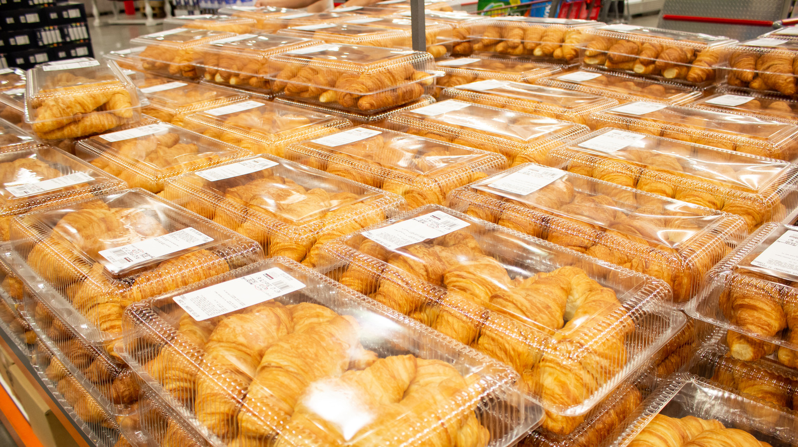

Philadelphia Turkey and Cheese Croissant with Pineapple Slices

"I may not be good at cooking but this makes me feel some way"
Stuff you will need
- Philadelphia Cream Cheese (Does not have to be this specific brand, any cream cheese will do)
- croissant
- Sliced Ham
- AMERICAN Cheese
- Butter (Optional)
- Pineapple Slices (This is not optional)
How to make it
- Place down the croissant.
- Apply a thin spread of butter over the roof of the croissant.
- Split the croissant in two by slicing it horizontally.
- For the following steps, you will be operating on the sides where the croissant slices were initially bounded by.
- Apply a layer of cream cheese on one or both sides of the croissant.
- Add however many slices of cheese, sliced ham, cream cheese, or even nothing at all onto the sides of the croissant.
- Add the Pineapple Slices.
- Toast the croissant in a toaster oven at 350 degrees Fahrenheit for 6-8 minutes or until its soft and flakey with the ingredients edible.
- After it's cooked, wait until its cool enough to retrieve and enjoy.
Why is this my favorite recipe? Because it is the only recipe I know.
Click here to redirect to a website for more recipes.
| Nutrition Facts |
| Calories |
650 |
| Total Fat |
40g |
| Cholesterol |
115mg |
| Sodium |
1800mg |
| Sugars |
15g |
| Protein |
30g |